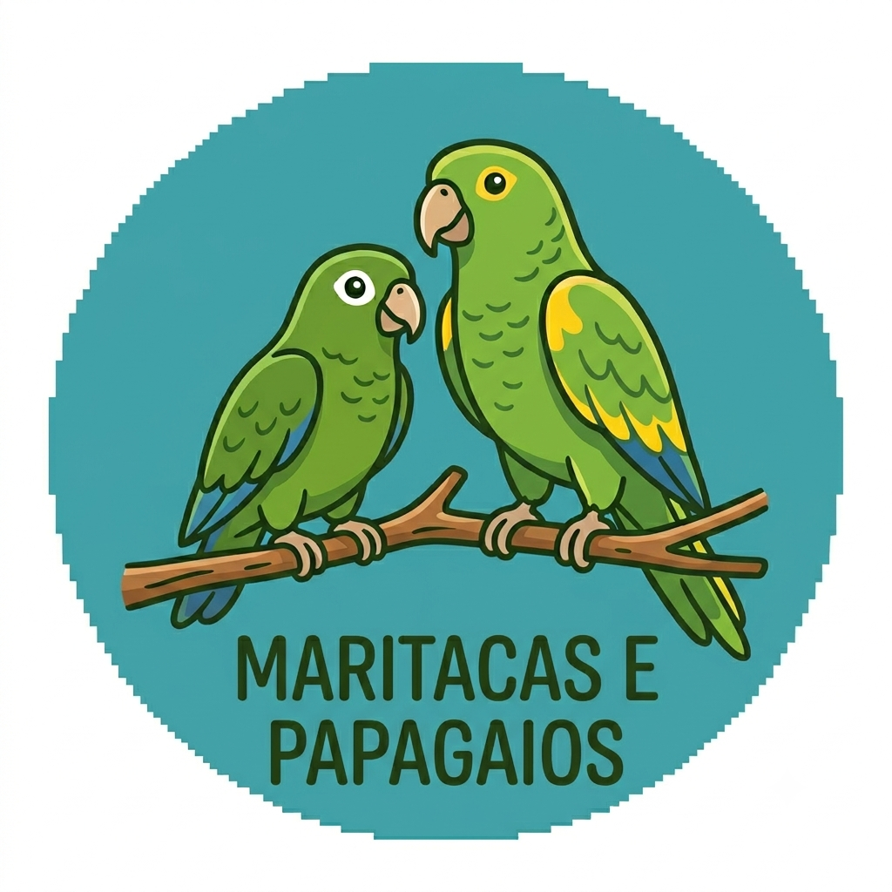

Meu primeiro postPor: Marcelo belinato filho
Boas-vindas ao meu blog, aqui irei falar sobre a vida das maritacas e papagaios e algumas curiosidades sobre eles
Conhecendo as maritacas
irei falar sobre as maritacas e os papagaios

Meu primeiro postPor: Marcelo belinato filho
Boas-vindas ao meu blog, aqui irei falar sobre a vida das maritacas e papagaios e algumas curiosidades sobre eles
Conhecendo as maritacas